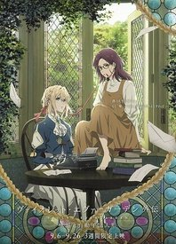

永远与自动手记人偶

永远与自动手记人偶
别名:
ヴァイオレット・エヴァーガーデン 外伝 - 永遠と自動手記人形
上映:
2019-09-06
地区:
日本
类型:
治愈
爱情
奇幻
第一季已完结：共14集
外传：共1集
剧场版：共1集
第一季
外传
剧场版
第1集
动漫介绍
以晓佳奈的人气轻小说为原作的京都动画制作的TV动画《紫罗兰房屋花园》的外传作品。没有感情的原军人少女小提琴手，通过代笔写信的“自动手记人偶”的工作，面对各种各样的人的想法，了解爱的意义的身姿纤细的映像表现的幻想群像剧。本作品描写了与对生活绝望的新委托人少女伊莎贝拉的故事。导演是在TV系列中担任系列导演的藤田春香。2019年9月限定上映3周。 ……作为守护重要之物的交换，我卖掉了我的未来。 仅允许良家子女就读的女学园。 对于与父亲交换了「契约」的伊莎贝拉·约克而言， 这个绽放着白色山茶花的美丽地方，简直就是牢狱……。 伊莎贝拉失去了对未来的希望以及期待，此时在她面前出现的是 被雇来当教育员的薇尔莉特·伊芙加登。
Copyright © 2014-2022
MUSESTAR
All Rights Reserved
萌ICP备20220574号